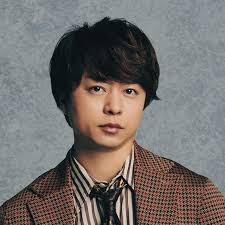

大野智
大野智wiki
大野智は、嵐のリーダーであり、歌やダンスの才能に加え、
俳優やアートの分野でも才能を発揮する多彩なアーティストです。
櫻井翔

櫻井翔wiki
櫻井翔は、嵐のメンバーで、ラップ担当としての音楽活動に加え、
ニュースキャスターや俳優としても幅広く活動する多彩なタレントです。
相葉雅紀
相葉雅紀wiki
相葉雅紀は、嵐のメンバーで、親しみやすいキャラクターと明るい性格で知られ、
俳優やバラエティ番組の司会者としても人気のタレントです。
二宮和也
二宮和也wiki
二宮和也は、嵐のメンバーで、演技力に定評があり、
映画やドラマで数々の賞を受賞している実力派俳優です。
松本潤
松本潤wiki
松本潤は、嵐のメンバーで、カリスマ性とスタイリッシュなイメージを持ち、
俳優やコンサートの演出家としても才能を発揮しているタレントです。